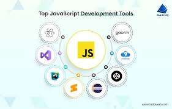
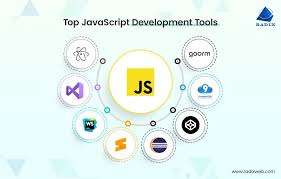
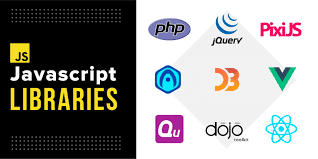

JavaScript
Un análisis profundo sobre JavaScript y su impacto en el desarrollo web
Un análisis profundo sobre JavaScript y su impacto en el desarrollo web
JavaScript es un lenguaje de programación esencial para el desarrollo web moderno. Introducido en 1995 por Brendan Eich mientras trabajaba en Netscape, JavaScript ha evolucionado considerablemente y se ha convertido en uno de los lenguajes de programación más populares y versátiles en el mundo del desarrollo web.

JavaScript es un lenguaje de programación interpretado que se ejecuta principalmente en el navegador web, permitiendo la creación de páginas web interactivas y dinámicas. Su capacidad para manipular el contenido de la página en tiempo real lo convierte en una herramienta poderosa para desarrollar aplicaciones web y mejorar la experiencia del usuario.


Frontend SPAs, Herramientas de Construcción Backend APIs, Bases de Datos Móvil y Escritorio React Native, Electron

En 1995, Brendan Eich desarrolló JavaScript para Netscape. A lo largo de los años, ha evolucionado desde un simple lenguaje de scripting hasta convertirse en una pieza fundamental del desarrollo web moderno.
Interactividad: JS permite agregar elementos interactivos a las páginas web, como animaciones, respuestas a eventos (clics, desplazamientos), formularios dinámicos, etc. Lenguaje del lado del cliente: Se ejecuta directamente en el navegador del usuario, lo que lo hace perfecto para la creación de experiencias web rápidas y receptivas. Lenguaje del lado del servidor: Con entornos como Node.js, JavaScript también se puede usar para programar en el servidor, lo que permite crear aplicaciones web completas con un solo lenguaje. Compatible con múltiples navegadores: JS es soportado por prácticamente todos los navegadores modernos (Chrome, Firefox, Edge, Safari). Lenguaje basado en objetos: Aunque no es un lenguaje orientado a objetos tradicional como Java o C++, JavaScript utiliza objetos y prototipos para estructurar y organizar el código.
 

El futuro de JavaScript incluye mejoras continuas en el estándar ECMAScript, la integración de TypeScript y WebAssembly, y su creciente aplicación en machine learning y desarrollo móvil.
